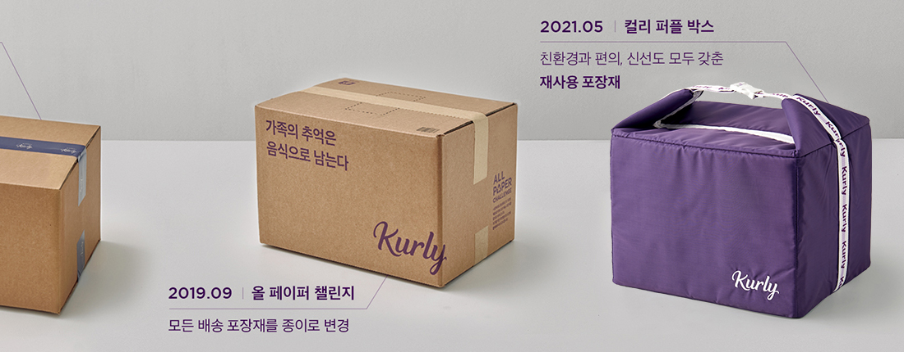

1
/
6

![컬리 퍼플 박스 이용 안내
- 포장 방법으로 컬리 퍼플 박스를 선택해 주문하셨다면, 배송 전 문 앞에 컬리 퍼플 박스를 꼭 놓아 주세요.
- 컬리 퍼플 박스가 배송 장소에 없을 경우, 보냉 종이백에 상품을 담아드려요.
컬리 퍼플박스를 반복해서 배송장소에 내어 놓지 않으시는 경우, 당사 규정에 따라 컬리 퍼플 박스 이용에 제한이 발생할 수 있어요.
- 주문하신 상품이 컬리 퍼플 박스에 모두 들어가지 않는 경우, 보냉 종이백에 나눠 담아드려요.
- 보냉 종이백은 종이 포장재에 비해 신선도 유지 기능이 부족할 수 있으니 이용에 유의해 주세요.
- 예약상품 또는 컬리 퍼플 박스에 담을 수 없는 상품은 별도 포장재에 담아 배송해 드려요. (파손우려가 있는 상품,
부피가 큰 상품, 선물세트, 박스 상품 등)
주문량 증가로 인한 긴급 배송 대응 시 별도 포장재에 담아 배송해 드려요.
- 공동현관 출입 불가 등의 이유로 상품을 배송 장소에 둘 수 없는 경우, 보냉 종이백에 담아드려요.
- 다른상품과 함께 컬리 퍼플 박스를 구매하시고, 포장 방법으로 컬리 퍼플 박스를 선택하시면 컬리 퍼플 박스에 상품을 담아 보내드려요.
- 컬리 퍼플 박스는 구매가 필요한 상품으로, 구매하신 후 환경을 위해 지속적으로 사용하실 것을 권장해드려요.
개인 보냉 박스 이용 안내
포장방법으로 개인 보냉 박스를 선택해 주문하셨다면, 배송 전 문 앞에 개인 보냉 박스를 꼭 놓아주세요.
- 개인 보냉 박스가 배송장소에 없거나 신청 사진과 다를 경우, 보냉 종이백에 담아드려요. (개인 보냉 박스로 주문하였으나, 컬리 퍼플 박스를 놓은 경우)
- 개인 보냉 박스를 반복해서 배송 장소에 내어 놓지 않으시는 경우, 당사 규정에 따라 개인 보냉 박스 이용에 제한이 발생할 수 있어요.
- 다른 곳에서 주문한 상품과 마켓컬리에서 주문하신 상품을 개인 보냉 박스에 함께 담아드릴 수 없어요. 다른 상품이 이미 담겨 있는 경우, 보냉 종이백에 담아드려요.
- 주문하신 상품이 개인 보냉 박스에 모두 들어가지 않는 경우, 보냉 종이백에 나눠 담아드려요.
- 보냉 종이백은 종이 포장재에 비해 신선도 유지 기능이 부족할 수 있으니 이용에 유의해 주세요.
- 예약 상품 또는 개인 보냉 박스에 담을 수 없는 상품은 별도 포장재에 담아 배송해 드려요. (파손 우려가 있는 상품 부피가 큰 상품, 선물세트, 박스 상품 등)
주문량 증가로 인한 긴급 배송 대응 시 별도 포장재에 담아 배송해 드려요.
- 공동현관 출입 불가 등의 이유로 상품을 배송 장소에 둘 수 없는 경우, 보냉 종이백에 담아드려요.](./images/purplebox/purplebox_008.jpg)